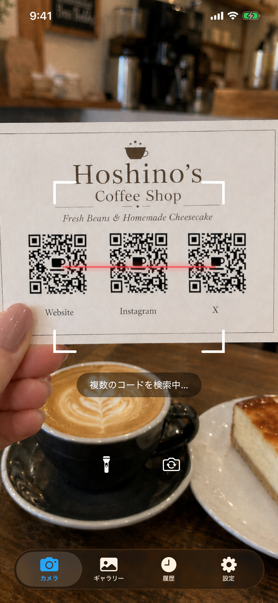
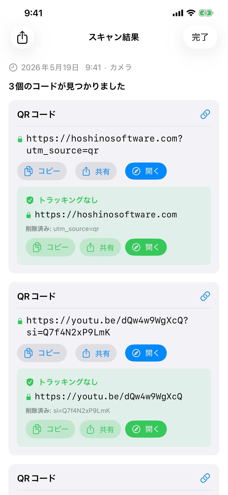
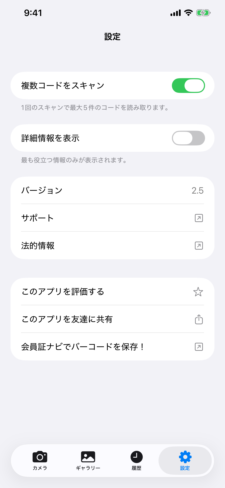
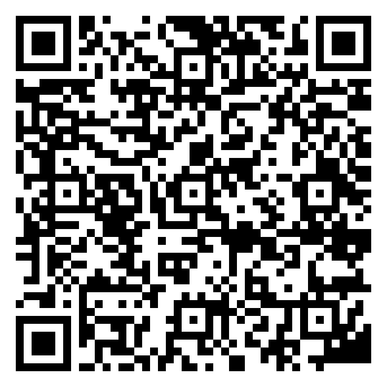
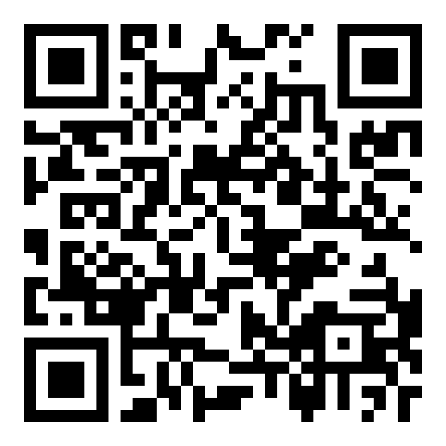

万能スキャナー
iPhoneのカメラや保存した写真から、バーコードやQRコードを読み取れます。オフラインで動作し、クラウドへのデータ保存や広告表示はありません。
iOS 18以降が必要です。
ダウンロード


サポート
ご質問や不具合のご報告は、メールでご連絡ください。
お問い合わせの前に
使い方は下のマニュアルと「よくある質問」をご覧ください。不具合がある場合は、まず以下をご確認ください。
- カメラが使えない場合：iPhoneの設定 → プライバシーとセキュリティ → カメラ → 万能スキャナーのアクセスを有効にしてください。
- 履歴を確認したい場合 履歴タブを開いてください。最大10,000件の読み取り結果が保存され、コードの内容で検索できます。
- コードがスキャンできない場合：明るい場所でコードを動かさずに読み取ってください。コードの写真がある場合は、ギャラリーからの読み取りもお試しください。
- アプリが強制終了する場合：アプリを開き直してください。問題が続く場合は、iPhoneの機種とiOSのバージョンを添えてメールでご連絡ください。
よくある質問
- インターネット接続は必要ですか？
いいえ。万能スキャナーは完全にオフラインで動作します。 - データは収集されますか？
いいえ。どこにもアップロードされません。スキャン履歴はデバイス上にのみ保存されます。 - フォトライブラリ全体にアクセスしますか？
いいえ。写真の選択画面で選んだ1枚だけを読み取ります。写真ライブラリ全体へのアクセスは求めません。 - スキャンに時間がかかるのはなぜですか？
設定の複数コードをスキャンをご確認ください。オンの場合は、ほかのコードも読み取るために少し待ってから結果を表示します。1つずつ読み取る場合は、オフにすると待ち時間を短くできます。 - 複数コードモードでは何をしていますか？
一度に最大5個のコードを読み取ります。最初のコードを見つけた後も、画面内のほかのコードを読み取るため、少しの間スキャンを続けます。 - スキャン履歴はどのくらい保存されますか？
最大10,000件の読み取り結果を、保存期限なしで端末内に保存します。履歴タブでは、読み取った内容を検索できます。 - なぜリンクに自動的に移動しないのですか？
知らないサイトを自動で開かないよう、先に読み取ったURLを表示します。アドレスを確認してから開くことができます。 - 使用するカメラのレンズを選べますか？
はい。カメラ画面で切り替えボタンをタップすると iPhone のレンズを順に切り替えられ、長押しするとリストから選べます。選んだレンズは保存され、次回も同じレンズを使います。
マニュアル



カメラ
カメラタブを開くとスキャンが始まります。iPhoneをバーコードやQRコードに向けてください。カメラへのアクセスを求められたら許可してください。アクセスがオフの場合は、設定を開くをタップし、万能スキャナーのカメラへのアクセスをオンにします。
- ライト: ライトボタンをタップすると暗い場所を照らせます。フラッシュのあるカメラでのみ使用できます。
- カメラの切り替え: 切り替えボタンをタップすると、iPhone のすべてのレンズ（超広角・広角・望遠・前面、モデルにより異なります）を順に切り替えられます。長押しすると、リストから特定のレンズを選べます。最後に使ったカメラは保存され、次回も同じカメラを使います。
ギャラリー
保存した写真から読み取るには、ギャラリータブの写真を選択をタップします。アプリが読み取るのは選んだ写真だけです。写真ライブラリ全体へのアクセスは求めません。
写真を選ぶと読み取り結果が表示されます。コードが見つからない場合は、その旨が画面に表示されます。
履歴
読み取り結果は履歴タブに自動で保存されます。最大10,000件のスキャンを保存期限なしで端末内に保存し、読み取った内容を検索できます。
- 過去のスキャンを見る: 履歴をタップすると、読み取り結果の詳細が開きます。
- 1 件削除: 行を左にスワイプして削除をタップします。
- すべて削除: 右上のゴミ箱アイコンをタップします。
- 読み取り元: カメラ、ギャラリー、共有のどの方法で読み取ったかを表示します。
- 検索: 検索欄に文字を入力すると、その文字を含む読み取り結果に絞り込まれます。
設定
設定タブには機能の切り替えとアプリ情報が表示されます。
複数コードをスキャン
初期設定では、万能スキャナーは1つのコードを見つけると停止します。複数コードをスキャンをオンにすると、名刺、商品シート、複数のコードが並んだ画像などで、最大5個のコードを同時に検出できます。カメラは最初の検出後も短いあいだスキャンを続け、表示中のコードを集めてから結果を表示します。
高度な詳細を表示
高度な詳細を表示をオンにすると、各スキャン結果の横にQRコードのバージョン、誤り訂正レベル、マスクパターン、バーコードの構造（開始/停止文字、チェックデジット）などの技術情報が表示されます。この情報は結果ページと履歴タブの行に表示されます。
スキャン結果
設定で高度な詳細を表示をオンにすると、結果ページに2つの追加セクションが表示されます。
- デコードされたデータ: コードに記録されている、加工前の文字列。
- 構造: 開始・停止文字、チェックデジット、ガードパターンなど、コードの構成を示します。表示される内容はコードの種類によって異なります。
QR コードの場合は、バージョン番号、誤り訂正レベル、マスクパターンを示すラベルも表示されます。
トラッキングパラメータの検出
URLにトラッキング用のパラメータが含まれていると、緑色のトラッキングなしカードが表示されます。カードにはパラメータを除いたURLと、削除済み：の欄に削除した項目が表示されます。対象にはUTMタグや、Facebook、Google Ads、Microsoft、TikTokなどのクリックIDが含まれます。カード内の「コピー / 共有 / 開く」は、パラメータを除いたURLを使います。
別のアプリからスキャン
ほかのアプリで開いた画像を、共有メニューから万能スキャナーに送って読み取れます。メッセージ、メール、ブラウザなどの画像にも使えます。
共有を使う:
- ギャラリーまたは任意のアプリで画像を開き、共有ボタンをタップします。
- 表示されたアプリの一覧から万能スキャナーを見つけてタップします。見つからない場合は一覧の末尾までスクロールし、その他をタップしてください。
- アプリが開き、画像を自動的にスキャンします。
アクションを使う:
- ギャラリーまたは任意のアプリで画像を開き、共有ボタンをタップします。
- アプリ一覧の下のアクション行をスクロールしてScan for Codesをタップします。
- アプリが開き、画像を自動的にスキャンします。
ホーム画面ウィジェット
ホーム画面にウィジェットを追加すると、タップするだけでカメラが開き、スキャンが始まります。サイズは小・中・大から選べます。
- ホーム画面の空いている場所を、アイコンが揺れるまで長押しします。
- 左上の+ボタンをタップします。
- 万能スキャナーを検索します。
- サイズを選択してウィジェットを追加をタップします。
- 後からウィジェットを長押ししてウィジェットを編集を選択することで、サイズを変更できます。
Control Center
Control Center は、画面右上の角から下にスワイプすると現れるパネルです。万能スキャナーのボタンを追加すると、ロック画面や他のアプリの使用中など、どこからでもワンタップでカメラを起動できます。
- 右上の角から下にスワイプして Control Center を開きます。
- +ボタンをタップして編集モードに入ります。
- 一覧から万能スキャナーを見つけてタップして追加します。
- 編集モード中にドラッグして位置を変更したり、サイズを変更したりできます。
対応コード一覧
| コード | 備考 |
|---|---|
| QR Code | 最も一般的な 2D コード。URL、Wi-Fi、連絡先などに使用 |
| Micro QR | スペースが限られた小さなラベル向けの QR Code のコンパクト版 |
| Aztec | 搭乗券や交通機関のチケットに使用 |
| Data Matrix | 製造業、医療、物流で一般的に使用 |
| PDF417 | 運転免許証、搭乗券、配送ラベルに使用 |
| Micro PDF417 | 医薬品包装などの小型品向けのコンパクトな PDF417 |
| EAN-8 | 小型商品向けの短い小売バーコード |
| EAN-13 | 世界中の多くの消費者製品に見られる標準的な小売バーコード |
| UPC-E | 米国・カナダの小型小売包装に使用されるコンパクトなバーコード |
| Code 39 | 最も古いバーコードの 1 つ。産業環境でよく見られる |
| Code 93 | Code 39 の情報をより高密度に記録できる後継規格 |
| Code 128 | 物流や配送で広く使われる高密度バーコード |
| ITF-14 | 段ボール製の配送箱に印刷された 14 桁のバーコード |
| Codabar | 図書館、血液バンク、一部の宅配会社で使用 |
| GS1 DataBar | 農産物や生鮮食品などの小型品向けのコンパクトな小売バーコード |
| GS1 DataBar Expanded | 重量や有効期限などの追加データを持つ拡張形式 |
非対応：
| コード | 備考 |
|---|---|
| EAN-2 / EAN-5 (アドオン) | EAN-13 に付加される短い追加コード。雑誌の号数と書籍の価格表示に使用 |
| rMQR | 細長いラベル向けに設計された小型の長方形QRコード（矩形マイクロQR） |
| MaxiCode | UPS が配送ラベルに使用する 2D ドットマトリックスコード |
| SP Code | 音声データをエンコードする日本のアクセシビリティバーコード |
| 郵便バーコード | 各国の郵便サービスが使用する 4 ステート郵便バーコード（USPS Intelligent Mail、Royal Mail、Australia Post、Japan Post など） |
| 独自アプリコード | 発行元のアプリのみがスキャンできる独自形式のコード |
デモコード
カメラでこの画面から直接スキャンするか、スクリーンショットを撮ってギャラリータブをお使いください。
 | QR Code トラッキングパラメータ付き URL https://hoshinosoftware.com?utm_source=review&utm_campaign=demo |
 | QR Code ラベル付きリンク（2行目にURL） CodeReader https://hoshinosoftware.com/codereader/ |
 | QR Code アプリのディープリンク (scheme://) itms-apps://apps.apple.com/app/id6761772999 |
 | QR Code 開けるアプリがないディープリンク noappopensthis://demo |
QR Code HTTP・トラッキング・エンコード文字 http://ja.wikipedia.org/wiki/QR%E3%82%B3%E3%83%BC%E3%83%89?utm_source=qr | |
 | QR Code Wi-Fi ネットワーク WIFI:S:example-wifi;T:WPA;P:example-password;; |
 | QR Code メール mailto:test@example.com |
 | QR Code 連絡先 (vCard) BEGIN:VCARD VERSION:3.0 N:Last;First FN:First Last ORG:Company TITLE:Job Title ADR:;;Street;City;CA;90401;USA TEL;WORK;VOICE: TEL;CELL:+1234567890123 TEL;FAX: EMAIL;WORK;INTERNET:example@example.com URL:https://example.com END:VCARD |
 | QR Code 認証アプリの設定 (TOTP) otpauth://totp/Code%20Reader:demo@example.com?secret=JBSWY3DPEHPK3PXP&issuer=Code%20Reader&algorithm=SHA1&digits=6&period=30 |
 | QR Code パスキーのサインイン要求 FIDO:/145820612314923085710293845761029384756102938475610293847561029384756102938475610293847561029384756 |
 | Micro QR 小さなラベル向けコンパクト QR HELLO |
 | Aztec (Full) 交通機関 / 搭乗券 AZTEC-DEMO-CODE |
 | Aztec (Compact) 小さなラベル向けコンパクト版 AZTEC-DEMO-CODE |
 | Data Matrix (Square) 製造業 / 医療 DATAMATRIX |
 | Data Matrix (Rectangular) 細長いラベル向け矩形バリアント DATAMATRIX |
 | PDF417 身分証明書 / 配送ラベル PDF417 SAMPLE DATA |
 | Micro PDF417 小型品向けコンパクト PDF417 MICROPDF417 SAMPLE DATA |
 | EAN-13 小売バーコード 5901234123457 |
 | UPC-E コンパクト小売バーコード（米国/カナダ） 01234565 |
 | Code 128 物流 / 配送 CODE-128-DEMO |
 | ITF-14 配送箱バーコード 12345678901231 |
 | GS1 DataBar 小型品向けコンパクトバーコード 0112345678901231 |
法的情報
プライバシーポリシー
最終更新: 2026年5月
アプリ内課金なし
万能スキャナーは App Store での買い切りアプリで、アプリ内課金やサブスクリプションはありません。決済は Apple が処理し、当社がApple ID、支払い方法、その他の支払い情報を受け取ることはありません。
サードパーティサービス
万能スキャナーはサードパーティの分析、広告、またはトラッキングサービスを使用しません。いかなるデータもサードパーティと共有されません。
子どものプライバシー
個人データを収集しないため、万能スキャナーはすべての年齢のユーザーに安全であり、COPPAおよび世界各国の同様の規制に準拠しています。
ポリシーの変更
このプライバシーポリシーは随時更新される場合があります。変更は掲載後すぐに有効になります。定期的にこのページをご確認ください。
お問い合わせ
このプライバシーポリシーに関するお問い合わせ：support [at] hoshinosoftware [dot] com
利用規約
最終更新：2026年4月
規約への同意
万能スキャナーをダウンロードまたは使用することにより、この利用規約に同意したものとみなされます。同意しない場合は、アプリをご使用にならないでください。
ライセンス
Hoshino Softwareは、本規約およびAppleのApp Store利用規約に従い、Appleデバイスで万能スキャナーをご使用いただくための個人的・非譲渡・非独占的ライセンスを付与します。
許可された使用
万能スキャナーは合法的な目的のためにのみご使用いただけます。適用される法律または規制に違反する方法でアプリを使用しないことに同意します。
無保証
万能スキャナーは明示または黙示のいかなる保証もなく「現状のまま」提供されます。アプリがエラーなく動作すること、中断なく利用できること、または特定の目的に適していることを保証しません。
責任の制限
適用法が許容する最大限の範囲において、Hoshino Softwareは万能スキャナーの使用または使用不能から生じる直接的・間接的・付随的・特別・結果的損害について責任を負いません。
規約の変更
この利用規約は随時更新される場合があります。変更後もアプリを引き続き使用することは、改訂された規約に同意したものとみなされます。
準拠法
本規約は、Hoshino Softwareが事業を行う管轄地域の法律に準拠します。
お問い合わせ
この利用規約に関するお問い合わせ：support [at] hoshinosoftware [dot] com